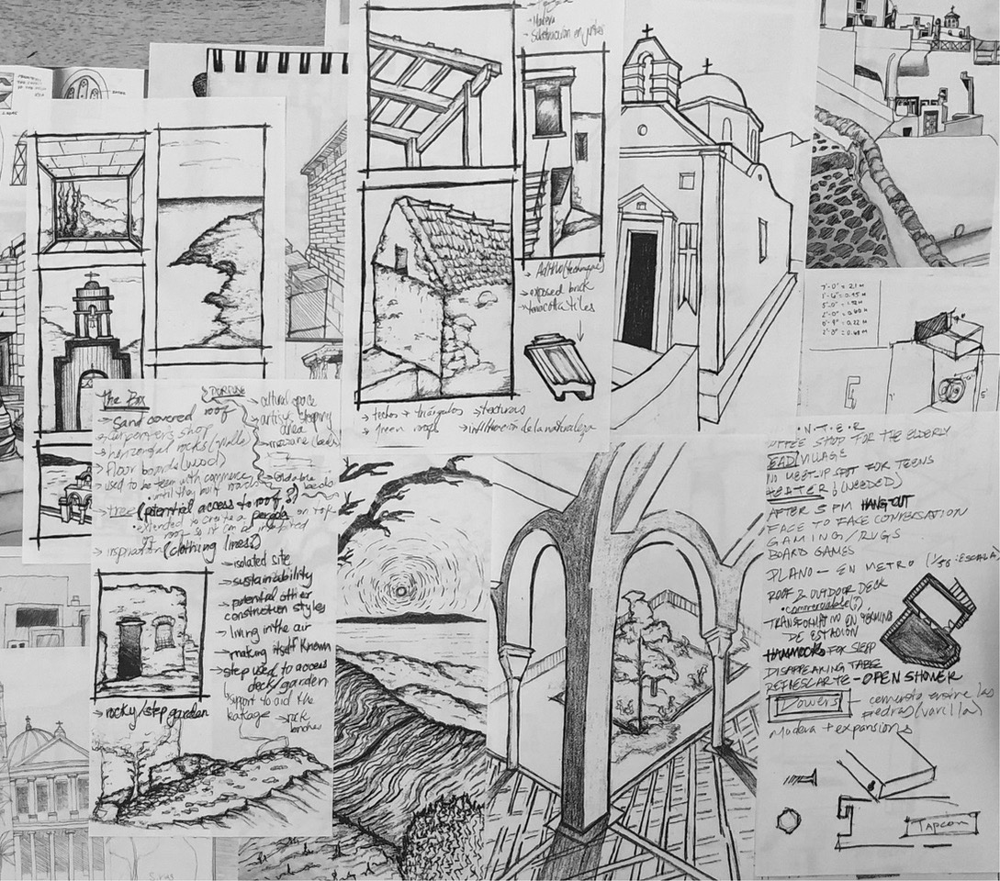

Work sample from drawing sessions during student's stay in the island of Kea, Greece. Excercise include capturing details of vernacular architecture that can be incorporated into restoration design project at a selected site in the island of Kea.
During the summer of 2019 I received funding from the Brown International Scholarship Committee (BISC) to develop and coordinate a summer course connecting Brown and University of Puerto Rico students around sustainable architecture and design in Greece. I coordinated academic and logistical components of this international educational program, where a cohort of 20 students participated in hands-on workshops, site visits, and collaborative design projects focused on sustainable practices in the context of Greek vernacular architecture. We visited chosen sites in Attica, the Peloponnese, and the Cycladic islands, including the site of the final project in the island of Kea, engaging with local communities and documenting architectural details to inform restoration and design interventions.
Additionally, I invited Puerto Rican musicians Armando Román and Enrique Álvarez, to participate in a short residency in the final project space, fostering interdisciplinary collaboration and cultural exchange between the students, the invited artists and local artists.
Link to project statement and schedule